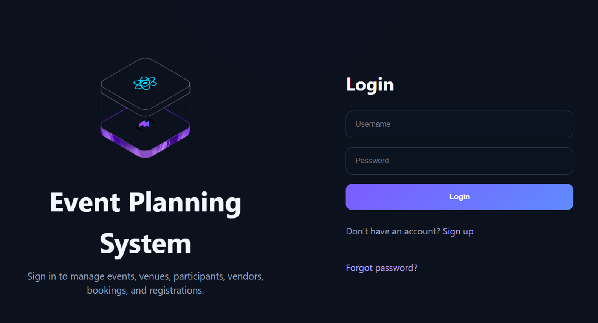

Event Management System
Full-stack event management app built with Spring Boot, React, PostgreSQL, JPA, and JWT. Developed REST APIs for event creation, registration, authentication, and persistent data, designed relational PostgreSQL data models, and integrated the backend with a React/Vite frontend.